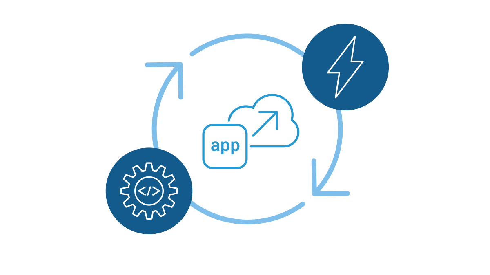
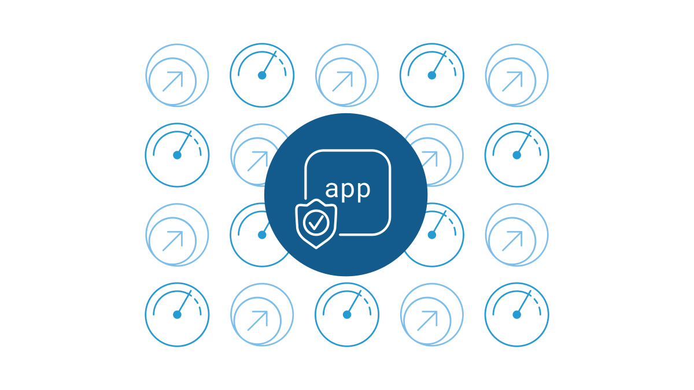
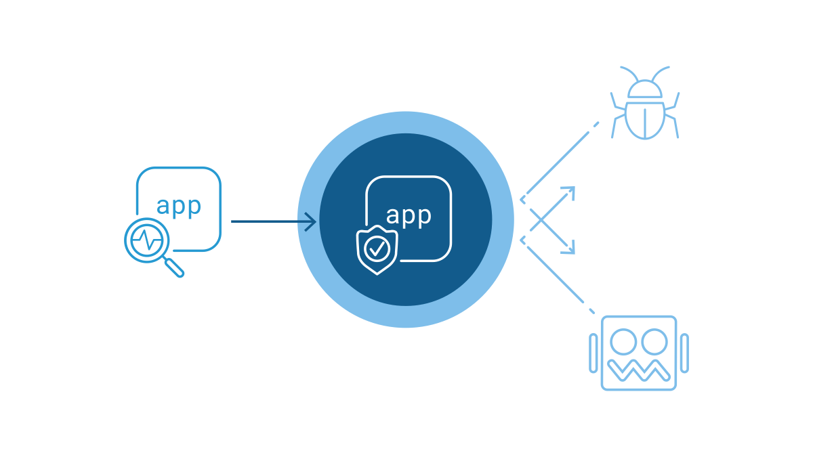
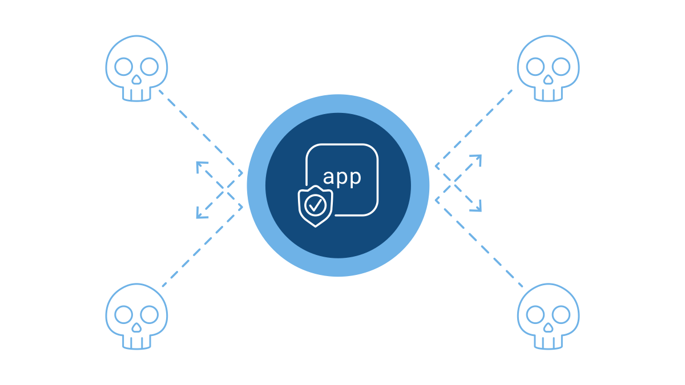
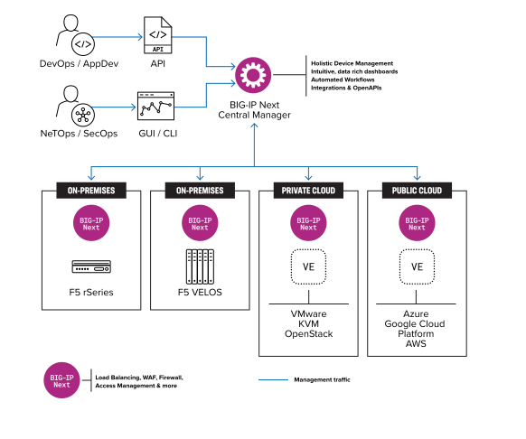
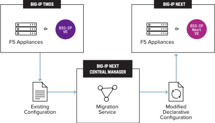
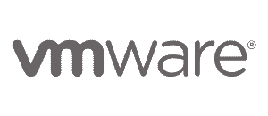

请访问原文链接：F5 BIG-IP Next 20.3.0 - 多云安全和应用交付 查看最新版。原创作品，转载请保留出处。
作者主页：sysin.org

BIG-IP Next
您所熟知和信赖的 BIG-IP 经过现代化改造和优化，简化了操作，提升了性能，并增强了安全性。
为什么要向 BIG-IP Next 迁移？
简化运维和自动化
BIG-IP Next 大幅简化了日常 ADC 操作，并通过自动化技术加快了应用的上市时间 (sysin)，这意味着您可以节省在琐碎任务上消耗的时间，将时间更多地投入到真正重要的事务中：上线您的应用，并确保其始终在线。

- 加速和自动化应用部署通过直观的配置模板 (FAST) 和声明式 API (AS3) 简化和加速应用程序部署，提供全面的配置控制和完全的自动化。
- 快捷、轻松的软件升级在短短五分钟内即可完成 BIG-IP Next 的主要软件升级 (sysin)，次要升级可在传递应用流量时同步进行，无需停机。
- 通过 BIG-IP Next 中央管理器实现集中控制现代化的图形用户界面（GUI）提供单一的集中控制点，可在 BIG-IP Next 系列产品中执行所有生命周期任务，从而大幅降低操作的复杂性。
卓越的性能和可扩展性
BIG-IP Next 采用高度可扩展的现代化软件架构，旨在最大程度地实现弹性，为庞大、多变的应用组合及其最复杂的流量管理和安全策略提供支持 (sysin)，确保终端用户始终可以使用应用。

- 卓越的控制平面效率和规模通过利用为实现最大弹性而构建的卓越控制平面，支持庞大、动态的应用组合及其最复杂的配置。
- 更高的应用弹性通过加速设备的故障转移，并引入本地和全球设备的自动扩展能力，优化应用的正常运行时间。
丰富的可观察性和分析能力
深入了解应用的运行状况、网络性能、流量模式和安全威胁，改进业务决策。

- 富有洞察力的应用分析和仪表盘根据各个应用的状态和运行状况 (sysin)，做出数据驱动型决策，同时简化故障排除工作。
- 第三方遥测流自动将应用和设备遥测数据导出到 Splunk 和 Grafana 等您熟悉的第三方分析和可视化工具。
- 集中化的监控、警报和报告从分布式工作负载中收集应用的洞察信息，并为预先确定的事件类型生成警报和报告。
更高的安全性和更低的业务风险
紧跟不断演变的网络威胁，更快地实施新的保护措施，保障应用和网络的安全。

- 快速的安全更新利用更频繁的软件版本更新和最新的网络威胁应对措施，确保您的安全态势跟上不断变化的威胁。
- 更快的漏洞修补通过加速软件开发实践 (sysin)，您可以比以往更快地修补新发现的漏洞。
- 以安全为中心的软件开发BIG-IP Next 的每一个开发和工程决策都将继续把安全放在首位，从而降低漏洞数量并提高软件安全性。
产品概览
获得统一的解决方案

BIG-IP Next 和 BIG-IP Next 中央管理器
高性能、可扩展的数据平面，负责在企业内部、主机托管设施、云中或边缘交付和保护应用流量。
BIG-IP Next 实例
高性能且可扩展的数据平面，负责在本地、托管设施内、云中或边缘交付和保护您的应用程序流量。
BIG-IP Next 中央管理器（BIG-IP Next Central Manager）
集中式控制台能够全面管理、自动化和监控部署在任何地方的众多 BIG-IP Next 实例。
迁移到 BIG-IP Next

BIG-IP Next 继承了超过 25 年的安全应用交付专业技术，提供同样全面的应用服务套件 (sysin)，包括本地和全局服务器负载均衡、Web 应用防火墙保护、访问管理等
使用 BIG-IP Next 中央管理器，可以毫不费力地过渡到 BIG-IP Next，该服务可以轻松修改现有的 BIG-IP TMOS 应用程序配置，并使其与 BIG-IP Next 软件兼容。
核心功能
通过更频繁的安全更新、更高的 SecOps 运营效率，以及更快的 WAF 部署速度，缓解最前沿的 Web 应用程序和 API 威胁。
BIG-IP Next LTM
适用于核心、云端和边缘工作负载的新一代应用交付服务 (sysin)，具备自动化与扩展能力。
BIG-IP Next WAF
通过更频繁的安全更新、更高的 SecOps 运营效率，以及更快的 WAF 部署速度，缓解最前沿的 Web 应用程序和 API 威胁。
BIG-IP Next Cloud-Native Network Functions
在从 4G 过渡到 5G 网络时，利用安全、自动化且可扩展的云原生解决方案。
BIG-IP Next Service Proxy for Kubernetes
在 Kubernetes 中获得容器入口和出口、安全性和可见性的单点控制。
BIG-IP Next Virtual Edition
通过为云和虚拟化环境构建的尖端应用服务，增强混合云和多云应用的安全性和可靠性。
BIG-IP Next Access
新一代访问控制方案 BIG-IP Next Access 旨在以代码的形式交付应用访问能力。借助 BIG-IP Next Access，您可以将访问控制前移，通过将身份验证和授权交由以 API 为核心、强化安全的访问控制解决方案处理，从而降低运营复杂性与成本。
BIG-IP Next SSL Orchestrator
BIG-IP Next SSL Orchestrator 提供现代化的新一代加密流量可视性与编排服务，为企业应用程序和整体安全提供关键保障。
BIG-IP Next DNS
F5 的新一代全局服务器负载均衡解决方案——Global Resiliency with BIG-IP Next DNS，可连接全球范围内部署的应用程序，覆盖多个工作流程，从而简化跨数据中心与云环境的高效应用流量管理。Global Resiliency with BIG-IP Next DNS 有助于确保用户始终能够访问最健康、性能最优的应用程序。
其他模块即将推出
BIG-IP Next 将为所有现有的 BIG-IP 产品模块提供替代产品，包括 DNS、AFM、APM、SSL Orchestrator、CGNAT 和 PEM。
平台支持与集成
F5 系统支持
在 F5 的新一代系统上部署 BIG-IP Next，为托管 F5 的新一代 BIG-IP 软件提供高度可扩展、完全自动化的平台。
通过重复使用您在公有云中熟悉和信任的、最适合您的应用程序的应用服务，使您的云过渡不再令人望而生畏。无论您的关键任务应用程序部署在哪里，BIG-IP Next 虚拟版 (VE) 都能提供先进、高性能和一致的应用服务。
公有云支持
通过重复使用您在公有云中熟悉和信任的、最适合您的应用程序的应用服务，使您的云过渡不再令人望而生畏。无论您的关键任务应用程序部署在哪里，BIG-IP Next 虚拟版 (VE) 都能提供先进、高性能和一致的应用服务。
私有云支持
使用 BIG-IP Next 虚拟版 (VE)，在维持应用安全性和可用性的同时 (sysin)，在您的私有云中从硬件转向软件。

下载地址
F5 BIG-IP Next 20.0.0
- 百度网盘链接：
[EoD]
F5 BIG-IP Next 20.1.0
- 百度网盘链接：
[EoD]
F5 BIG-IP Next 20.2.0
- 百度网盘链接：
[EoD]
F5 BIG-IP Next 20.3.0
文件信息：
Central Manager (CM)
BIG-IP Next Central Management Solution.
| 20.3.0 | Release | Oct 21, 2024 | BIG-IP Next Central Manager v20.3.0 |
| File Name | Description | Size |
|---|---|---|
| BIG-IP-Next-CentralManager-20.3.0-0.16.18-Update.tgz | Upgrade file for BIG-IP Next Central Manager v20.3.0 | 2 GB |
| BIG-IP-Next-CentralManager-20.3.0-0.16.18-Update.tgz.md5 | MD5 file for Upgrade file for BIG-IP Next Central Manager v20.3.0 | 86 Bytes |
| BIG-IP-Next-CentralManager-20.3.0-0.16.18.ova | BIG-IP Next Central Manager v20.3.0 Standard OVA file | 4 GB |
| BIG-IP-Next-CentralManager-20.3.0-0.16.18.ova.md5 | MD5 file for BIG-IP Next Central Manager v20.3.0 Standard OVA file | 79 Bytes |
| BIG-IP-Next-CentralManager-20.3.0-0.16.18.qcow2 | BIG-IP Next Central Manager v20.3.0 Standard QCOW file | 4 GB |
| BIG-IP-Next-CentralManager-20.3.0-0.16.18.qcow2.md5 | BIG-IP Next Central Manager v20.3.0 Standard QCOW file | 82 Bytes |
F5 Systems (HW)
BIG-IP Next software for F5 hardware systems such as VELOS and rSeries.
| 20.3.0 | Release | Oct 21, 2024 | BIG-IP Next for VELOS/rSeries v20.3.0 |
| File Name | Description | Size |
|---|---|---|
| BIG-IP-Next-20.3.0-2.716.2+0.0.50-test-config.yaml | YAML Configuration File for BIG-IP Next Tenants | 3 KB |
| BIG-IP-Next-20.3.0-2.716.2+0.0.50-test-config.yaml.md5 | YAML Configuration File for BIG-IP Next Tenants | 85 Bytes |
| BIG-IP-Next-20.3.0-2.716.2+0.0.50.tar.bundle | BIG-IP Next VELOS/rSeries v20.3.0 Bundle File | 1 GB |
| BIG-IP-Next-20.3.0-2.716.2+0.0.50.tar.bundle.md5 | BIG-IP Next VELOS/rSeries v20.3.0 Bundle File | 79 Bytes |
Virtual Edition (VE)
BIG-IP Next software for Virtualized environments such as VMware and KVM.
| 20.3.0 | Release | Oct 21, 2024 | BIG-IP Next Virtual Edition v20.3.0 |
| File Name | Description | Size |
|---|---|---|
| BIG-IP-Next-20.3.0-2.716.2+0.0.50.ova | BIG-IP Next Virtual Edition v20.3.0 OVA File | 3 GB |
| BIG-IP-Next-20.3.0-2.716.2+0.0.50.ova.md5 | MD5 file for BIG-IP Next Virtual Edition v20.3.0 OVA File | 71 Bytes |
| BIG-IP-Next-20.3.0-2.716.2+0.0.50.qcow2.tar.gz | BIG-IP Next Virtual Edition v20.3.0 QCOW File | 2 GB |
| BIG-IP-Next-20.3.0-2.716.2+0.0.50.qcow2.tar.gz.md5 | MD5 file for BIG-IP Next Virtual Edition v20.3.0 QCOW File | 80 Bytes |
| BIG-IP-Next-Upgrade-20.3.0-2.716.2+0.0.50.tgz | BIG-IP Next Virtual Edition v20.3.0 Upgrade File | 2 GB |
| BIG-IP-Next-Upgrade-20.3.0-2.716.2+0.0.50.tgz.md5 | MD5 file for BIG-IP Next Virtual Edition v20.3.0 Upgrade File | 79 Bytes |
更多：HTTP 协议与安全

文章用于推荐和分享优秀的软件产品及其相关技术，所有软件提供免费版或试用版。内容若侵犯了您的版权，请联系作者删除。如果您喜欢这篇文章，或者觉得它对您有所帮助，亦或发现有不当之处；欢迎发表评论，也欢迎分享这个网站，或者赞赏一下，谢谢！提示：捐赠或赞赏属于自愿赠予行为，提交后即表示您对作者的支持与认可。为避免误操作，请在确认前仔细检查金额，支付完成后将无法撤销或退还。
 支付宝赞赏
支付宝赞赏  微信赞赏
微信赞赏赞赏一下
敬请注册！点击 “登录” - “用户注册”（已知不支持 21.cn/189.cn 邮箱）。 请勿使用联合登录（已关闭）。